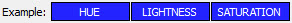
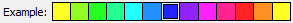
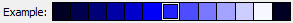
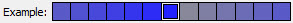

The VIP Shell has a large number of settings that can be configured to suit your own personal preferences. Some of these can be modified via keyboard shortcuts or toolbar icons in various parts of the shell user interface. But all of the options can be viewed and set in one place using the shell’s options dialog.
The options dialog can be displayed in several ways:
The dialog itself is divided into five sections or tabs:
The next few sections cover each of the option dialog’s tabs in more detail.
Note
It is important to note that the shell option settings are persistent, but not global. That is, the VIP Shell is a Facets editor, and like any editor, its user preference items depend on its View and Item id facet’s values.
Thus, based on how the VIP Shell is invoked, it may not support saving preference options at all, or it may save its setting under a different name than those of other VIP Shell instances.
For example, Facets includes a VIP Shell tool for use with the tools framework. It has a specific id for its shell settings which includes the tool’s name (normally VIP Shell). Changing the tool’s name results in a set of preference settings different than the default ones. The DockWindow’s Display>VIP Shell context menu action takes advantage of this by setting it’s VIP Shell tool instance’s name to something different than the default, allowing you to have a different set of shell preferences when using the DockWindow action than you would if you had invoked the VIP Shell tool directly from the command line: python -m facets.extra.tools.vip_shell.
Allows you to select which of the available VIP Shell themes to use. Click the name of the current theme to display a drop-down list of available themes. Once the list has focus, use the up and down arrow keys to visually cycle through the available themes. Click the list again to expand the drop down list and select a theme by name.
Once you select a theme, you can continue to fine tune its appearance using the controls on the Theme Colors tab.
Allows you to specify the maximum number of lines of text to display in a history item when the item is in expanded mode. If an item has more than the specified number of lines, items will be elided from the display (with a line indicating how many lines were omitted inserted in their place).
Click on the current maximum to display a pop-up slider used to adjust the maximum number of lines. Note that changing the value does not affect current history items already in the expanded state. The value is only used when an item enters the expanded state.
Allows you to specify the maximum number of list, dict, set or tuple values to display in a Result history item. If a collection contained in a Result item has more than the specified maximum, items will be elided from the display (with a line indicating how many items were omitted inserted in their place.)
Click on the current maximum to display a pop-up slider used to adjust the maximum number of items. Note that changing the value does not immediately affect current Result items. The value is only used when preparing an item for display when its content or state changes.
Allows you to specify the maximum number of lines of source code context to display on either side of the currently executing line when formatting an Exception history item for diplay. Fewer lines may be displayed if not enough contextually related source code is available.
Click on the current number of lines to display a pop-up slider used to adjust the line count. Note that changing the value does not affect existing Exception items. The value is only used when creating a new Exception history item.
The Debug tab displays a number of options useful for debugging your application code. The options are dividied into two categories:
The debug options are used in conjunction with the following debugging functions from the facets.core.debug module:
Each option controls the creation and display of history items associated with each of these functions as follows:
The control grabber options are used with the Control grabber tool on the status bar’s toolbar and are used to specify what values are added to the history list when the tool is used to grab a control:
Each history list item has three contextual toolbars: left, center and right. The toolbar tab shows the name of each tool and allows you to select which toolbars each tool appears in. Simply check or uncheck the toolbar you want each tool to appear in.
Note
Each tool can appear in a single, no or multiple toolbars.
Note
Although you can the select the toolbar(s) that a particular icon appears in, you cannot control the order of their appearance within a toolbar. The order is controlled by the shell.
Each VIP Shell theme defines the background colors and overall appearance of the various shell history item types. It also includes a default set of text colors used for various purposes within the theme. You can use the color selectors on the theme colors tab to modify those default text colors to suit your own taste.
Note
Changing the text colors on the theme colors tab only affects the text colors for the current theme. If you change themes, the new theme’s text colors are used. If you later switch back to your earlier theme, the colors you specified previously are restored.
If you want to discard all changes you have made to the current theme’s colors, click the Reset colors button located near the bottom of the tab. This restores the colors to the default colors for the current theme.
To change a color, hover your mouse pointer over the current color swatch for a particular item. The words HUE, LIGHTNESS and SATURATION overlay the current color:
Click within one of the three regions to modify the corresponding color attribute. Select a new hue, lightness or saturation value as desired:
  Right-click to return to the original color swatch to select a different color attribute.
Note
Each color swatch uses an HLSColorEditor. Refer to the section on that editor for more details on using it to select colors.
The purpose of each theme color is as follows:
Enter any Python code or shell commands you want executed before each VIP Shell session begins. For example, you can use this to import frequently used modules or packages.
Note
Any code or commands entered here are not executed until the next time the shell is started.